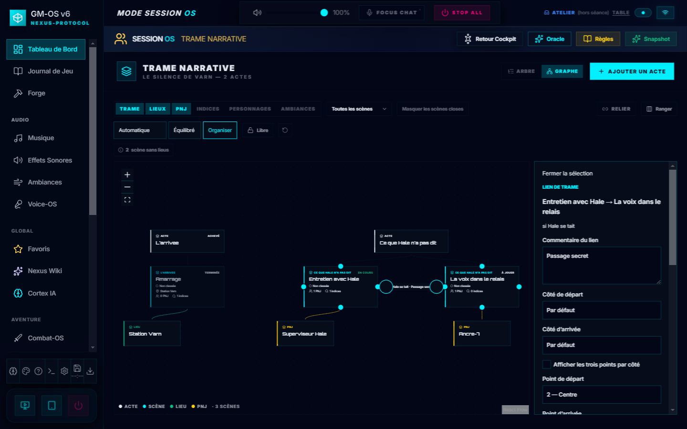
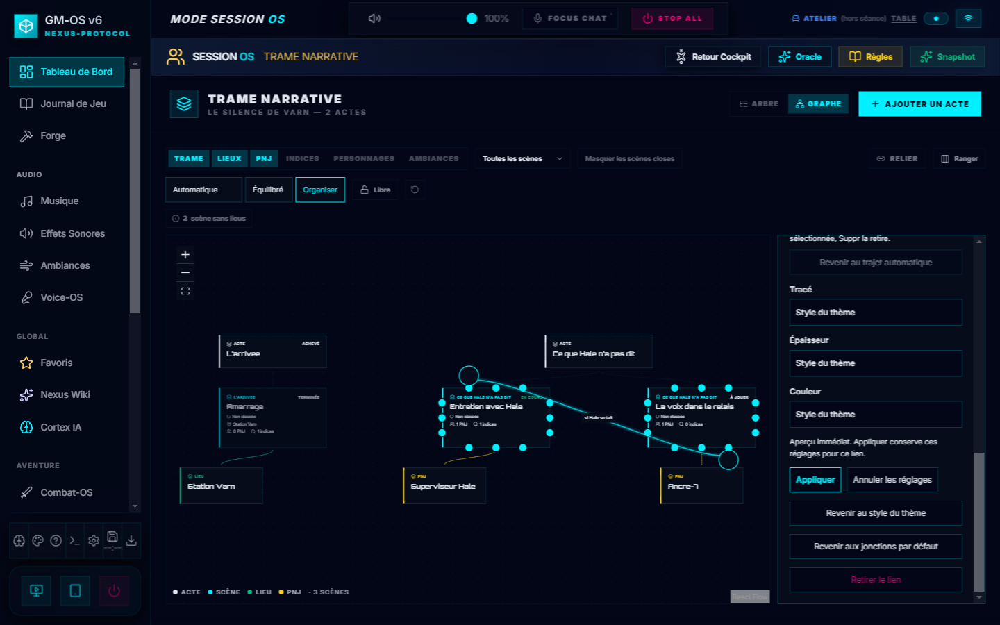
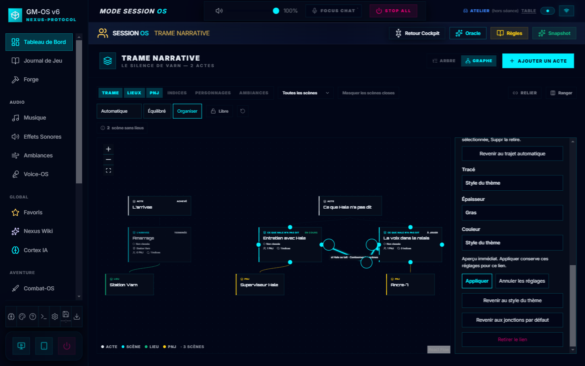
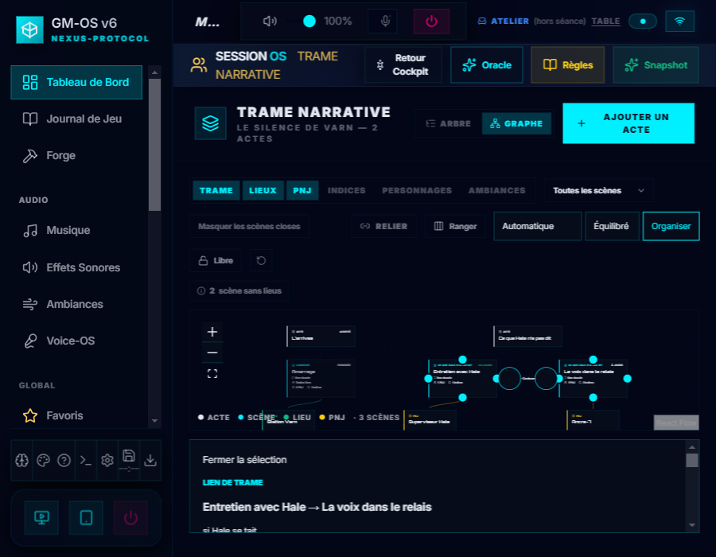

Trame — édition avancée des liens
Essais sur campagne témoin et profils jetables : commentaire, trois points
par côté et détours manuels. Les changements restent en aperçu jusqu'à Appliquer.
Réalisation, contrôles et reprise

Commentaire distinct de la condition narrative.

Départ en haut à gauche, arrivée en bas à droite ; choix au clic ou au clavier.

Point de passage déplacé au clavier et à la souris, puis conservé avec Appliquer.

Fenêtre étroite : panneau sous la toile.